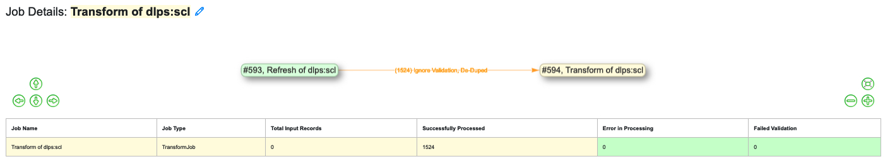
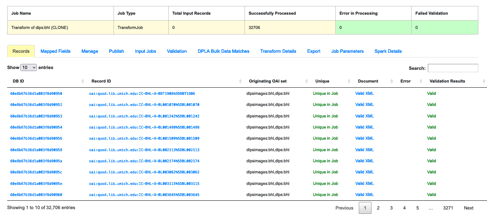
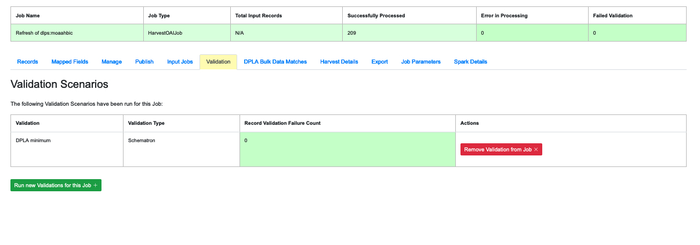
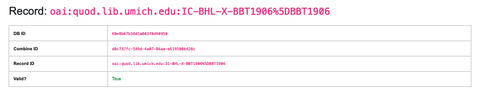
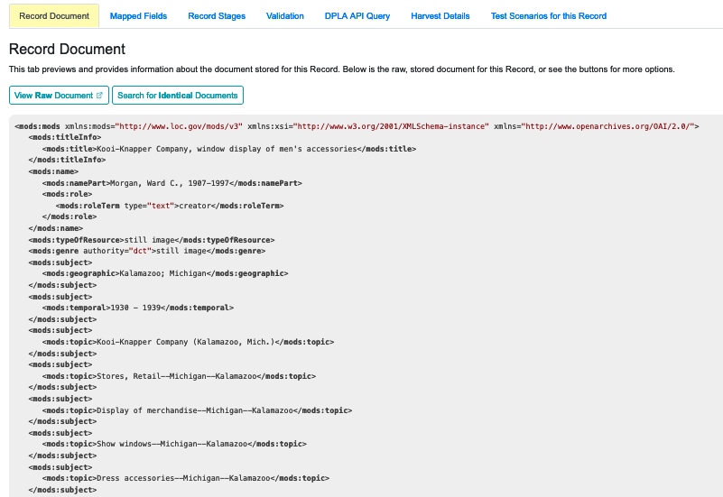
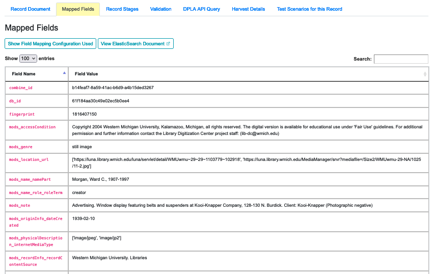
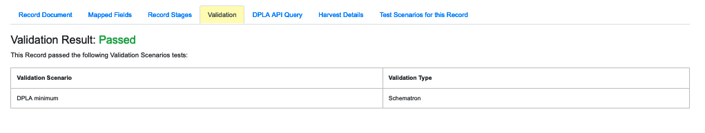
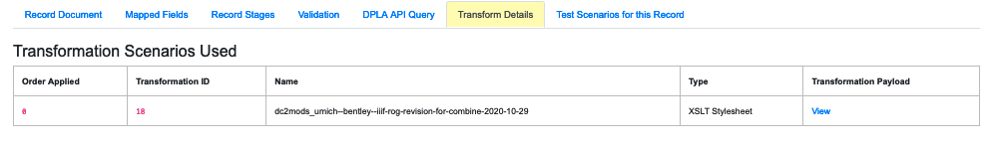

Now that you’ve run a Job, this section covers how to interpret Job results and, if necessary, the details of any Record. This is one of the longer sections because the data provided for Jobs and Records is complex.
At the very top of a Job Details page, is a visual representation of that Job’s “lineage,” displaying all of the other Jobs in Combine that relate to the one you’re viewing:
|  |
| Visual representation and table at the top of a Job Details page |
Immediately to the right of the Job’s name at the top left you will find a pen-shaped icon, which is a button that can be toggled in order to view notes for that Job. The notes can also be seen on the Record Group’s Jobs table.
The following tabs organize the various parts of the Job Details page:
|  |
| Table displaying all the Records in a Job |
This table shows all of Records in this Job. It is sortable and searchable in selected fields:
Note the search field at the top right of the Records table. If the user has enough data about a given Record, this field can be the most direct way to search for it.
|
| An indexed field analysis for a Job across all fields |
This tab displays a table of all of the indexed fields for the Job.
 |
| Commands available on the Manage tab |
This tab should not be confused with the “Job Management” section that appears on every Record Group page. While they are very similar, the commands on the “Manage” tab apply only to the specific Job in question. (For more on the Record Group page, “Part 7: Running Jobs.”) The commands on this tab include:
All of these options include a slider titled “Include Downstream?” that defaults to on or off, depending on the command. When the slider is on for a particular task, it will analyze the lineage of the Job and determine if any Jobs are downstream of it and include them in the action being peformed (e.g. moving, deleting, etc.) However, it’s important to note that when a Job is re-run, all Jobs that are ‘downstream” of it will also be automatically re-run because, by definition, they have inherited Jobs from the Job in question. (They are “farther down the pipeline.”)
The decision to re-run or clone a Job is important (see “Part 7: Running Jobs,” for the pros and cons of re-running and cloning).
This tab allows the user to Publish a Job so it’s records can be harvested from Combine’s OAI feed. This process is covered in more detail in “Part 13: Publishing Jobs.”
 |
| A display of the “Input Job” used to create a Transform Job |
In some cases a Job will inherit Records from a previous Job. Such Jobs are said to be “downstream” of a previous or “Input” Job. (See “Part 7: Running Jobs” for the section on “Pipelines.”) If a Job is not “downstream” of another, this tab will simply say “No Jobs were used as input for this Job.” But for Transform Jobs and other Jobs that use Records from “upstream,” there will be a list of any “Input Jobs” in this tab.
|  |
| Validation Scenarios that were applied to a Job |
Jobs can be run without a Validation Scenario, but if the user does apply one or more to a Job, they will be displayed on this tab. If the user decides that the Validation Scenario isn’t needed after the fact, this tab also allows them to remove it. The tab also shows the name of the Validation Scenario, its type, and the number of Records in the Job that failed it. If any Records failed, an additional blue button will appear that will show the results of the failures in more detail.
For more details about analyzing the Validation results of a Job, see “Part 11: Validation.”
This content of this tab depends on the type of Job that was run:
Clicking on an ID of a transformed Record will bring up a page with details about how it was transformed.
At the top of this page are all of the IDs for that record, followed by the Transformation Scenarios that were used on it. Beneath that is a section called “Changes to Record during Transformation” which provides two tabs, one showing “Combined Differences” and another showing a “Side-by-Side Comparsion.” These details are likely to be more than the typical user can engage with, especially for those managing large collections. But the data are there for those who need them, especially for identifying where exactly an error occurred.
This tab support export of Records in a variety of ways. For a detailed explanation, see “Part 15: Exporting Records”
 |
| Parameters useful for diagnostics |
This tab provides a convenient list of all parameters set for the Job.
This tab provides diagnostic information about the Job as run in in the background in Spark:
The Record is the most granular level of Combine’s data model (see “Part 5: Data Model”). A review of at least some Job results will probably be necessary when you run a job. Not many users are likely to have the time for reviewing individual Records, but the data are there if and when you need them, especially if you’re troubleshooting a specific problem. This section addresses the data available for a typical Record.
As noted above, the Job details page includes a table displaying individual Records. Clicking on the ID of any record brings up its detail page. At the top of that page is a table showing its ID information:
|  |
| ID data on a Record details page |
Beneath that are a row of tabs, just like a Job results page:
|  |
| Record document showing the XML |
This tab provides a view of the raw XML for the Record. Note the two buttons for this tab:
|  |
| Mapped Fields for this Record |
This tab displays a table of all the mapped fields for this Record.
Note the two buttons for this tab:
Notice in this table the columns DPLA Mapped Field and Map DPLA Field. Both of these columns pertain to a functionality in Combine that attempts to “link” a Record with the same record in the live DPLA site. It performs this action by querying the DPLA API (DPLA API credentials must be set in localsettings.py) based on mapped indexed fields. Though this area has potential for expansion, currently the most reliable and effective DPLA field to try and map is the isShownAt field.
The isShownAt field is the URL that all DPLA items require to send visitors back to the originating organization or institution’s page for that item. As such, it is also unique to each Record, and provides a handy way to “link” Records in Combine to items in DPLA. The difficult part is often figuring out which indexed field in Combine contains the URL.
Note: When this is applied to a single Record, that mapping is then applied to the Job as a whole. Viewing another Record from this Job will reflect the same mappings. These mappings can also be applied at the Job or Record level.
In the example above, the indexed field mods_location_url_@usage_primary has been mapped to the DPLA field isShownAt which provides a reliable linkage at the Record level.
 |
| Record stages showing the Jobs which included this Record |
This table show the various “stages” of a Record, in other words which Jobs run in Combine happened to include this Record.
Different instances and/or versions of the same Record share the same Combine ID (combine_id). So with this table, it’s possible to identify and access earlier “upstream” or later “downstream”, versions of the same Record.
|  |
| Validation results for this Record |
This tab shows all Validation Tests that were run for this Job, and how this Record fared. For more information about Validation in Combine, see “Part 11: Validation.”
Job results have a tab for the specific Job type, and so do the Records that are part of those Jobs. The name of this tab will depend on the Job type – Harvest, Transform, Merge/Duplicate, or Analysis. At the moment, however, only Transform Jobs have additional data for this tab.For Records that are part of Harvest, Merge, or Analysis Jobs, this tab will currently say, “No additional information at this time.”
Transform Records
|  |
| Transformation Scenarios on the Transform Record details page |
For Records in Transform Jobs, the first section of the page will show which Transformation Scenarios were used on that Record, including the type and a link to a display of the Transformation Payload.
The first section shows the Transformation Scenario used, including the transformation itself, and the “input” or “upsteram” Record that was used for the transformation:
The rest of the page displays one or the other of two comparison view options. Note that, for extensive Transform Jobs that largely re-write a Record, the views on this page might be long and complex.
One view combines the changes into one list:
 |
| Combined view of changes made to a Record from a Transform Job |
The other offers a split view, showing the original and transformed versions side-by-side (this view relies on the sxsdiff library):
 |
| Side-by-side view of changes made to a Record by a Transform Job |
This section is a more recent addition. It offers four possible tests that a user can apply to the Record in question. This feature has not been heavily tested.
Next: Publishing Records